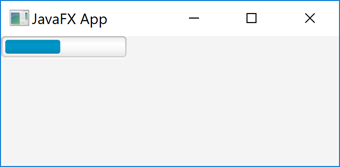
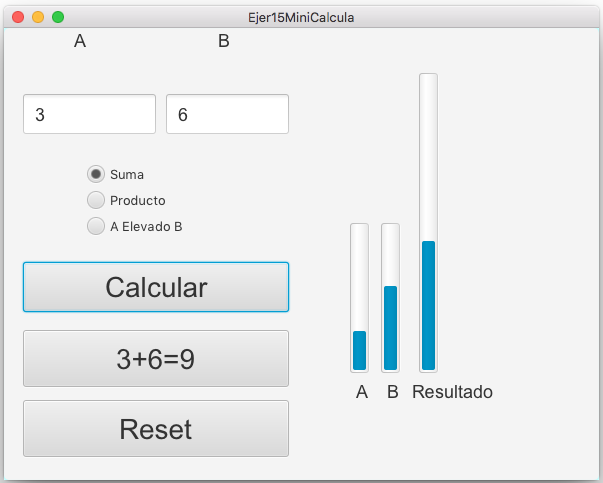

JavaFX ProgressBar
El ProgressBar de JavaFX es un control capaz de mostrar el progreso de alguna tarea o el porcentaje de una cantidad. El progreso se establece como un valor doble entre 0 y 1, donde 0 significa que no hay progreso y 1 significa progreso total (tarea completada). El control ProgressBar de JavaFX está representado por la clase javafx.scene.control.ProgressBar. Aquí hay una captura de pantalla de cómo se ve una barra de progreso de JavaFX:

Pero en este curso no haremos multitarea, por lo que mostrar progresos de tareas se escapa del contenido de este año, lo que podemos hacer es mostrar de forma gráfica porcentajes de cantidades, por ejemplo, en la aplicación de mini calculadora, si limitados los valores a rangos de 0 a 10 (o 100) podrías representar esos valores con barras de progreso.
Con Scene Builder pueder cambiar la orientación, e incluso dar un valor inicial al control.

Crear una barra de progreso
Para usar una ProgressBar de JavaFX, primero se debe crear una instancia de la clase ProgressBar. Así es como se crea una instancia de una barra de progreso de JavaFX:
ProgressBar progressBar = new ProgressBar();Puede crear una instancia de ProgressBar con un nivel de progreso determinado pasando el valor de progreso como parámetro a su constructor, así:
ProgressBar progressBar = new ProgressBar(0);Configuración del nivel de progreso
Estableces el nivel de progreso de una barra de progreso a través del método setProgress(). Por ejemplo:
ProgressBar progressBar = new ProgressBar(0);
progressBar.setProgress(0.5);